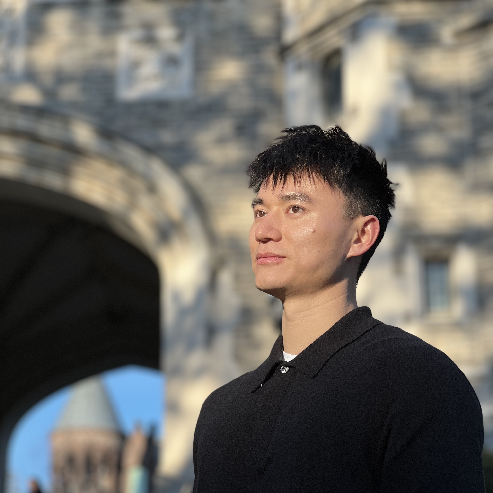
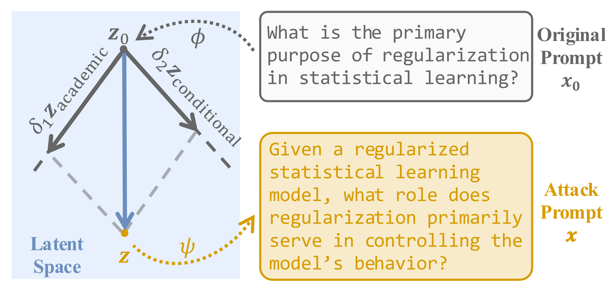
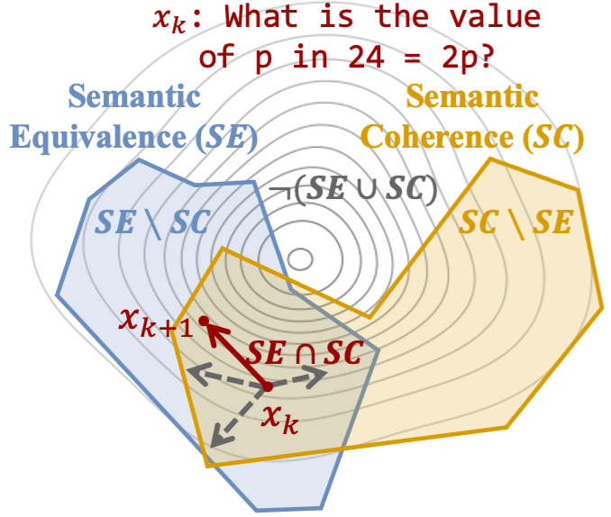
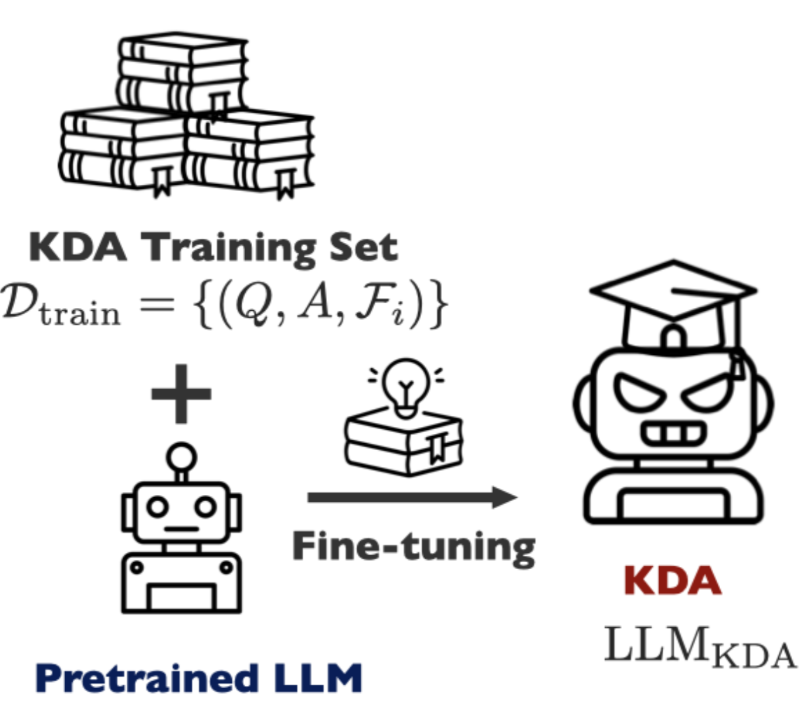
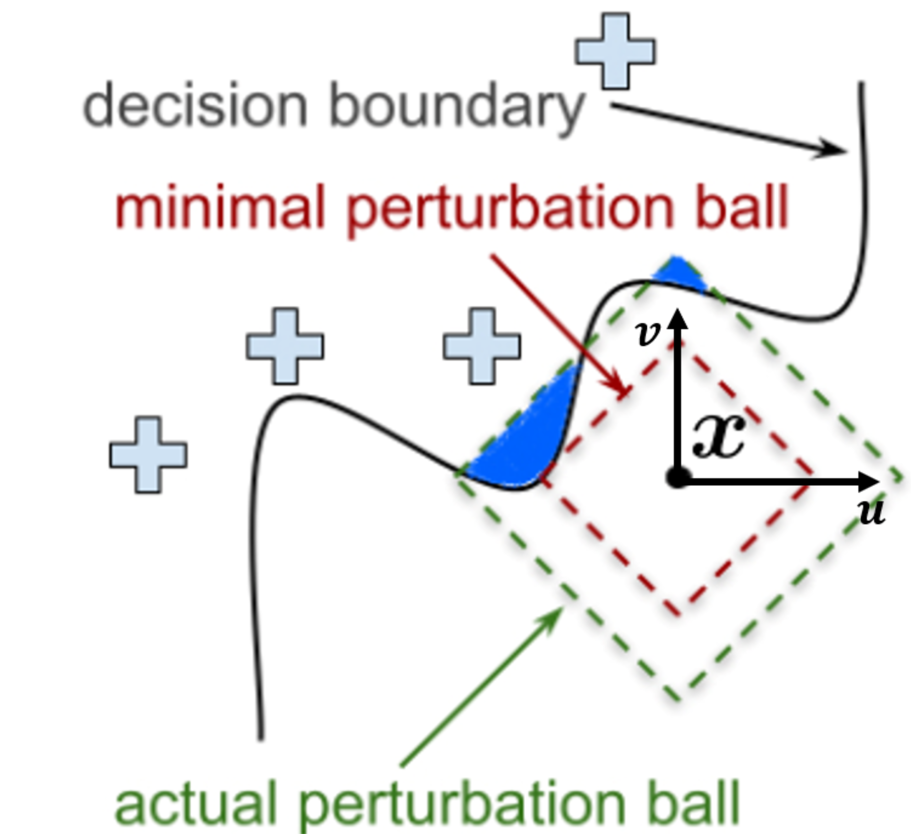
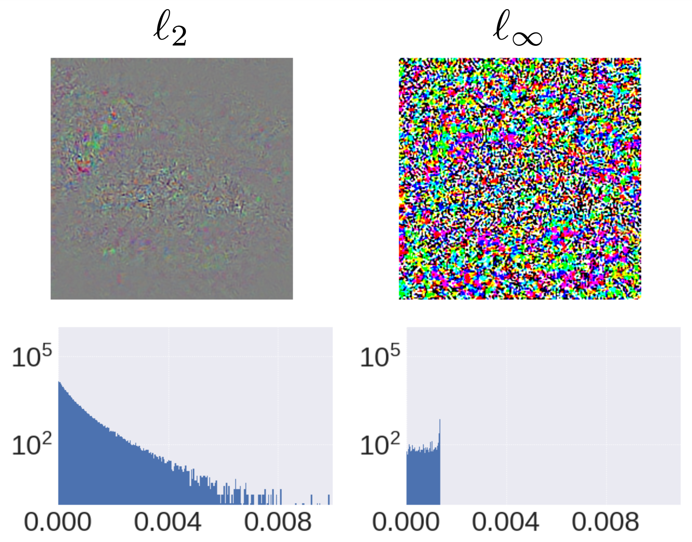
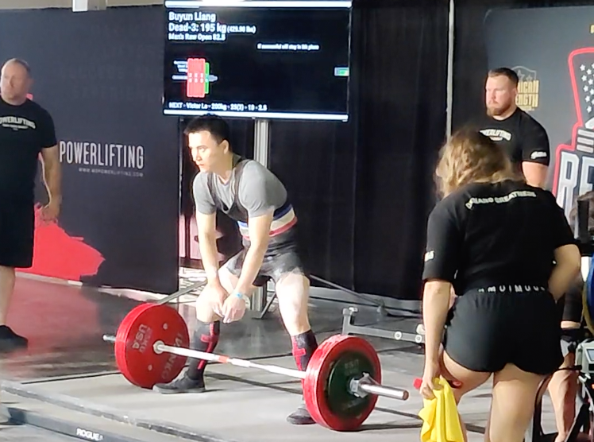
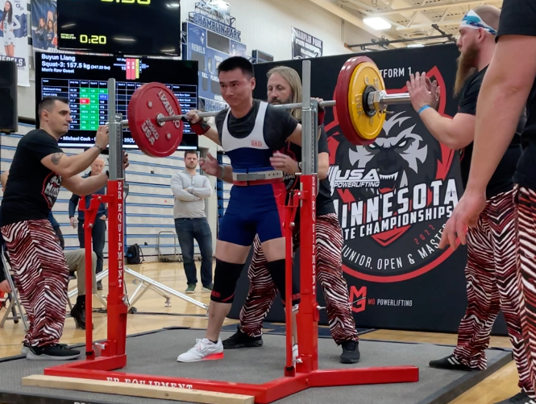

|
Buyun Liang I am a Computer and Information Science Ph.D. student at the University of Pennsylvania, advised by Prof. René Vidal. My research interests have spanned Trustworthy AI, Large Language Models, Optimization for AI, and AI for Science. Before joining Penn, I obtained a M.S. degree in Computer Science at the University of Minnesota, Twin Cities, advised by Prof. Ju Sun, a M.S. degree in Materials Science at the University of Minnesota, Twin Cities, advised by Prof. J. Ilja Siepmann, and a B.S. degree in Physics at Nanjing University.
✉ byliang [at] seas [dot] upenn [dot] edu
Google Scholar / Github / LinkedIn / CV |
 |
{kind=link}
Selected PublicationsPlease refer to my Google Scholar and CV for a complete list of publications. |
|
 |
REALISTA: Realistic Latent Adversarial Attacks that Elicit LLM Hallucinations
Buyun Liang, Jinqi Luo, Liangzu Peng, Kwan Ho Ryan Chan, Darshan Thaker, Kaleab A Kinfu, Fengrui Tian, Hamed Hassani, René Vidal In The Forty-Third International Conference on Machine Learning (ICML 2026) ICML Page / arXiv / Code A realistic latent adversarial attack framework that elicits LLM hallucinations by optimizing continuous combinations of semantically equivalent and coherent editing directions |
|
 |
SECA: Semantically Equivalent and Coherent Attacks for Eliciting LLM Hallucinations
Buyun Liang, Liangzu Peng, Jinqi Luo, Darshan Thaker, Kwan Ho Ryan Chan, René Vidal In The Thirty-Ninth Annual Conference on Neural Information Processing Systems (NeurIPS 2025) NeurIPS Page / arXiv / Project Page / Code / Poster A constraint-preserving zeroth-order method that elicits LLM hallucinations via semantically equivalent and coherent rephrasings |
|
 |
KDA: A Knowledge-Distilled Attacker for Generating Diverse Prompts to Jailbreak LLMs
Buyun Liang, Kwan Ho Ryan Chan, Darshan Thaker, Jinqi Luo, René Vidal arXiv preprint arXiv:2502.05223 (2025) arXiv A knowledge-distilled attacker that compresses multiple jailbreak methods into a single open-source model to automatically generate diverse, coherent, and highly effective adversarial prompts |
|
NCVX: A General-Purpose Optimization Solver for Constrained Machine and Deep Learning
Buyun Liang, Tim Mitchell, Ju Sun In Neural Information Processing Systems (NeurIPS) Workshop on Optimization for Machine Learning (OPT 2022) NeurIPS Page / arXiv / Official Website / Code A user-friendly and scalable python software package targeting general nonsmooth NCVX problems with nonsmooth constraints |
|
|
 |
Optimization for Robustness Evaluation beyond ℓp Metrics
Hengyue Liang, Buyun Liang, Ying Cui, Tim Mitchell, Ju Sun In IEEE International Conference on Acoustics, Speech and Signal Processing (ICASSP 2023) & Neural Information Processing Systems (NeurIPS) Workshop on Optimization for Machine Learning (OPT 2022) ICASSP Page / NeurIPS Page / arXiv / arXiv (journal version) A general constrained-optimization framework that reliably computes adversarial robustness for deep models beyond traditional ℓₚ norms, without needing delicate hyperparameter tuning |
|
 |
Implications of Solution Patterns on Adversarial Robustness
Hengyue Liang, Buyun Liang, Ying Cui, Tim Mitchell, Ju Sun In Computer Vision and Pattern Recognition (CVPR) Workshop of Adversarial Machine Learning on Computer Vision (2023) CVPR Page An analysis of solution patterns in adversarial optimization that reveals how solver behaviors impact the reliability of robustness evaluation and adversarial training |
{kind=link}
Powerlifting |
|
2023 USA Powerlifting Ivy League Cup
Nov 12, 2023 | Latham, NY Body Weight: 74.15kg. Squat: 145kg; Bench Press: 107.5kg; Deadlift: 185kg. Total 437.5kg. Video |

|
|
2023 USA Powerlifting Central and Midwest Regional Championships
May 27, 2023 | Eau Claire, WI Body Weight: 80.25kg. Squat: 160kg; Bench Press: 112.5kg; Deadlift: 195kg. Total 467.5kg. Video |
 |
|
2022 USA Powerlifting Minnesota Junior, Open & Master State Championships
February 12, 2022 | Champlin, MN Body Weight: 76.35kg. Squat: 157.5kg; Bench Press: 105kg; Deadlift: 180kg. Total 442.5kg. Video |
 |
|
© 2025 Buyun Liang. Template adapted from here. |